NISAR Canopy · NASA Space Apps Challenge 2026 · Dancing with the SARs
El desmonte del Chaco, medido con radar y contrastado contra bosque intacto
La banda L de NISAR atraviesa las nubes y no necesita luz solar, justo cuando el
monitoreo óptico se queda sin datos. Con esa señal medimos cuánto dosel se perdió,
dónde y en qué par de doce días, y lo comparamos contra un bosque sin intervención
usando las mismas imágenes y el mismo umbral.
Todo salió de NISAR Canopy, la consola abierta que construimos para
buscar escenas de la misión, correr los análisis y guardar el comprobante de cada
corrida. Esta página cuenta qué es, qué encontramos y hasta dónde llega: el método, el
control, la verificación óptica y los límites, con las cifras reproducibles.
Chaco paraguayo, banda HV, 20 m por píxel. Misma escala de grises en las dos fechas
(−17 a −9 dB): lo que cambia es el terreno, no el contraste. Arrastrá la línea.
English summary for international judges
NISAR Canopy is an open-source web console for the NASA-ISRO NISAR
L-band radar record. You draw a box on a map, the app lists every NISAR granule that
crosses it, and it runs the analysis you pick: amplitude change, radar vegetation
index, multi-date time series, water and fire masks, 200 m soil moisture (SME2), or
12-day interferometric coherence and phase (GUNW). Each run leaves PNG, GeoTIFF and
JSON artifacts plus the exact command plan, so any number can be reproduced.
Result: in the Paraguayan Chaco, HV backscatter dropped by more
than 3 dB over 245 ha after a 0.5 ha minimum mapping unit, between
20 January and 21 March 2026, against 2.1 ha in an adjacent control
box of untouched forest 9.8 km away, measured with the same images
and the same threshold. A second scene in eastern Paraguay at 10 m resolution keeps
291.5 ha of coherent blocks; its control keeps none.
What it does not prove: the product is PROVISIONAL, the 3 dB
threshold is not calibrated against field data, radar measures structure and not
biomass, backscatter also responds to soil moisture and acquisition geometry, and the
reported area depends on the scale, so it is given as a range. Every limitation is
listed in section 06.
01
Qué es NISAR Canopy, contado mientras bajás
Cinco paradas: qué es, para qué sirve, cómo se usa, qué mide y qué logró. El panel de
la izquierda cambia con cada una.
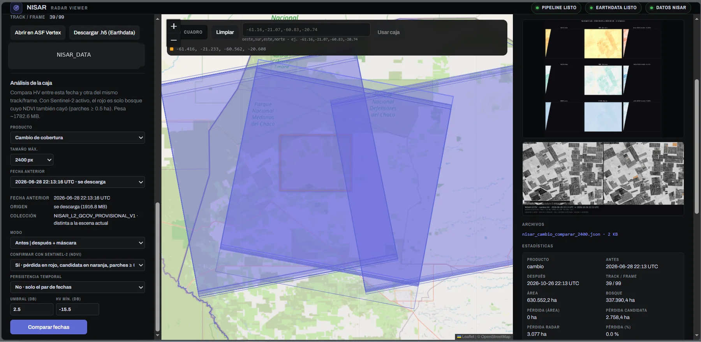
La consola, con una caja dibujada sobre el Chaco.
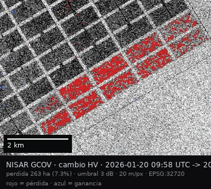
La pérdida de HV del 20 de enero al 21 de marzo: bloques alineados, desmonte.
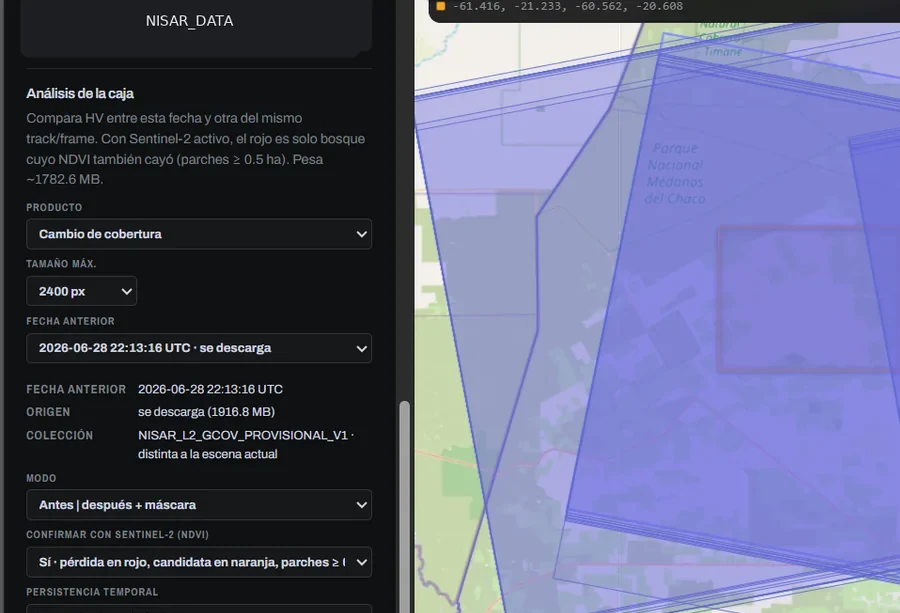
El panel de análisis: producto, fechas, modo y umbrales.
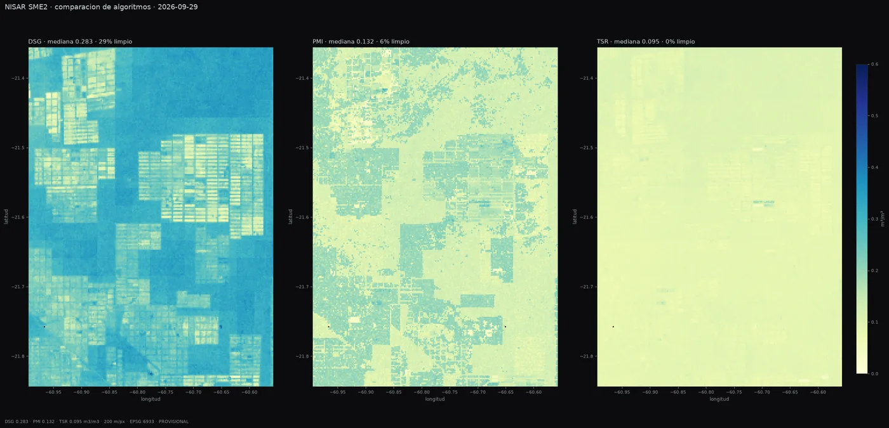
SME2: humedad del suelo a 200 m con los tres algoritmos.
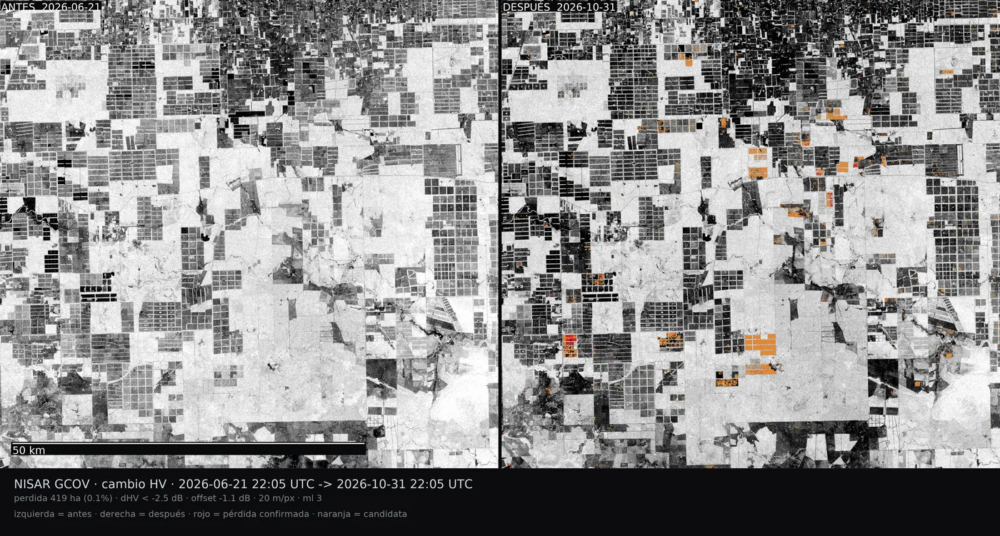
Una corrida completa: antes, después y la pérdida marcada.
Qué es
Una consola abierta para la misión NISAR
NISAR Canopy es una aplicación web: dibujás una caja sobre el mapa, busca las
escenas de radar de la misión que la cruzan y corre el análisis que elijas.
Backend en FastAPI, frontend en React con Leaflet y el pipeline de radar en
Python, cada trabajo como subproceso cancelable con progreso en vivo. Corre en
local o en Docker.
Para qué sirve
Para medir lo que el óptico no llega a ver
En el Chaco la temporada de lluvias coincide con el avance del desmonte: en enero
la caja de estudio aparece parcialmente anegada y una sola imagen se va en nubes.
Armar una escena limpia con Sentinel-2 costó doce por fecha.
NISAR lleva dos radares, en banda L y en banda S; acá se usa el de banda L, que
mide la estructura de la superficie y llega completa de noche y con el cielo
cubierto.
Cómo se usa
Cuatro pasos y el comprobante queda guardado
El visor devuelve las escenas con su imagen de browse, así se elige el par de
fechas antes de bajar un .h5 de cientos de megabytes. Cada corrida
deja PNG, GeoTIFF y un JSON con estadísticas, más el log con el plan exacto de
comandos: el resultado se repite, no se cree.
Dibujás la caja. Las escenas que la cruzan, con track, frame y fecha.
Elegís el par. Con browse, antes de descargar.
Elegís el producto. GCOV, SME2 o GUNW.
Corrés el job. Y te llevás el comprobante.
Qué mide
Tres familias de producto, con una sola escena
GCOV mide cambio de cobertura con ocho análisis y verificación Sentinel-2
opcional. SME2 mide humedad del suelo a 200 m con tres algoritmos que se pueden
comparar entre sí. GUNW mide coherencia y fase del par de doce días. Cada
producto responde una pregunta distinta sobre la misma escena.
Qué logra
Dos desmontes medidos, con control pareado
En el Chaco, 262,9 ha de caída de HV por debajo de −3 dB contra
2,1 ha en un bosque intacto a 9,8 km, medidos con las mismas
imágenes y el mismo umbral. En el Este, a 10 m, 291,5 ha en
bloques coherentes y cero en su control.
Lo que sigue es cómo se probó, qué no prueba y hasta dónde puede llegar.
Ir al caso medido →
108 s → 18 s
Una corrida de cambio con índices ópticos, con caché fría y con caché tibia.
45
Tests sin red sobre el contrato de la API, la validación de la caja y el plan de cada producto.
97,4 % → 97,8 %
Cobertura del compuesto óptico con 2 y con 8 ítems: el 65 % más de tiempo no compra casi nada.
Esta página muestra lo que la app produce, no la app en vivo: la
aplicación corre en local o en Docker y necesita credenciales de Earthdata para bajar
los productos. El código es MIT, versión 0.1.0, y la imagen está publicada en
ghcr.io/gillopy/nisar-canopy.
La caja de trabajo cubre 3.602 ha, con un 75 % de cobertura forestal.
A 9,8 km al suroeste se delimitó una caja de control de 5.283 ha con
94 % de bosque y sin intervención conocida en el período. A las dos se les aplicó
exactamente lo mismo: mismas escenas, mismo umbral, misma unidad mínima de mapeo.
Entre el 20 de enero y el 21 de marzo de 2026 el radar encontró
262,9 ha de caída de HV por debajo de −3 dB: el 7,3 % de la caja y el
9,7 % del bosque. Los bloques son rectangulares y están alineados: el patrón del
desmonte mecanizado, no el de un incendio ni el de una inundación.
Polígono del desmonte en rojo y polígono de control en gris, a 9,8 km. Proyección
local equirectangular; la grilla se traza cada 5 km.
262,9 ha
Desmonte. 7,3 % del área y 9,7 % del bosque. Los bloques rectangulares y alineados
son el patrón del desmonte mecanizado.
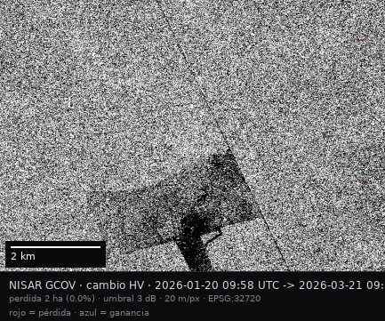
2,1 ha
Control. Mismo par de fechas, mismo umbral: sin bloques de cambio apreciables.
La misma caja, vista por Sentinel-2
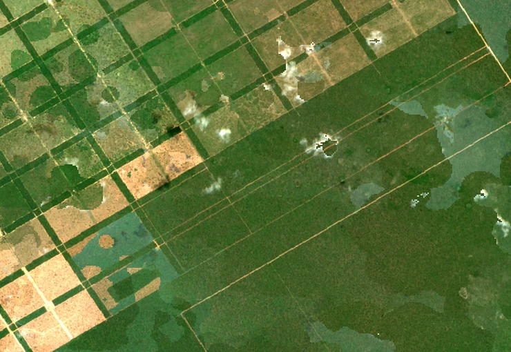
22 ene 202627 mar 2026
La misma caja en Sentinel-2 L2A, 10 m: mediana de doce escenas por fecha y nubes
enmascaradas. El radar dice dónde; el óptico confirma qué se ve.
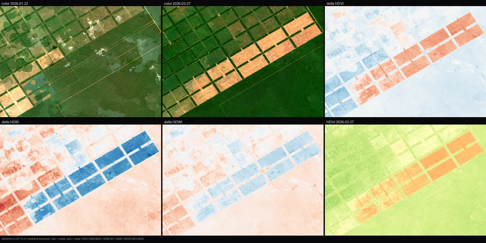
Arriba: color de enero, color de marzo y cambio de NDVI. Abajo: cambio de NDBI,
cambio de NDWI y NDVI de marzo. Dentro de la banda el NDVI cae y el NDBI sube: menos
infrarrojo cercano y más SWIR, la firma de suelo descubierto.
Cuándo ocurrió
NISAR repite la misma geometría cada 12 días. Al dividir la ventana en pares
consecutivos, el total acumulado se convierte en una secuencia y el cambio queda
acotado entre dos fechas: la pérdida empieza entre el 20 de enero y el 1 de febrero de
2026, y termina antes del 9 de marzo.
pérdida en el desmonte pérdida en el bosque de control
El par del 13 al 25 de febrero registra 102 ha de ganancia en el desmonte. El control
registra 26,6 ha en la misma ventana: el aumento es de la escena completa y no del
área desmontada.
Ver la tabla de pares, con el control
Hectáreas por par de 12 días, con el control pareado.
04
Caso 2 · El Este, a 10 metros y en otra estación
El mismo procedimiento, sin un cambio, sobre otra escena: 76.668 ha,
82 % de bosque, 10 m por píxel y 48 días entre fechas, en invierno. El objetivo era
comprobar si el método dependía del lugar, de la resolución o de la época del año.
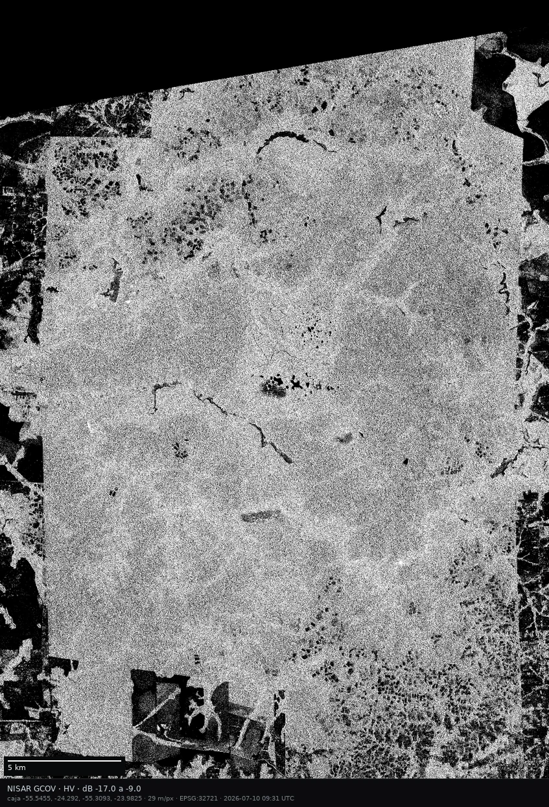
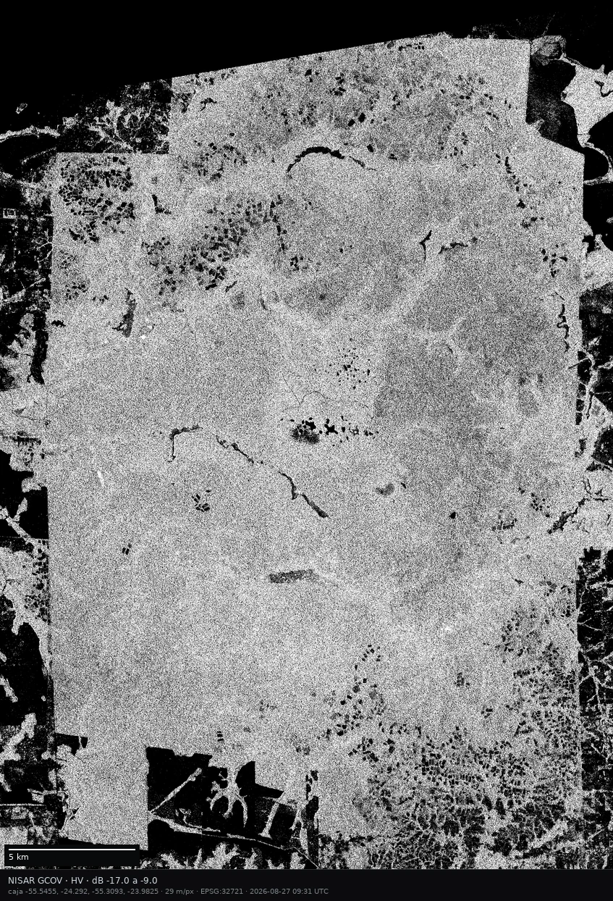
10 jul 202627 ago 2026
Este. Misma escala de grises en ambas fechas (−17 a −9 dB). El desmonte se
concentra en el extremo sudoeste de la caja. A esta escala la diferencia entre
fechas es poco visible; el área está cuantificada en la tabla.
Chaco contra Este
El conteo crudo da 1.069,8 ha, pero son fragmentos de pocos píxeles. Al exigir bloques
de media hectárea quedan 291,5 ha en 89 componentes, con una mancha
mayor de 34,3 ha. El control, con 1.892 ha de bosque, no produce ni un bloque.
Ver el barrido de umbral en el Este
La relación entre desmonte y control se mantiene en todos los umbrales, y crece a
medida que el umbral sube: los bloques con pérdida intensa son los que persisten.
05
Cómo sabemos que no es ruido
Cuatro pruebas independientes: un control al lado, el barrido del umbral, la
comparación entre ventanas cortas y largas, y una segunda fuente de datos. Ninguna
alcanza sola; juntas sostienen la conclusión.
El método, paso por paso
No hay un clasificador entrenado: el resultado sale de una cadena de umbrales
explícitos, todos reproducibles con los comandos del repositorio.
Lo probamos en tres zonas y varias ventanas
Todo lo medido para esta página, con su época del año y su resolución.
Zona
Ventana
Época
Resolución
Fuente
Superficie
Chaco
20 ene → 21 mar 2026
temporada de lluvias
20 m
NISAR
3.602 ha
Chaco, control
20 ene → 21 mar 2026
temporada de lluvias
20 m
NISAR
5.283 ha
Este
10 jul → 27 ago 2026
invierno
10 m
NISAR
76.668 ha
Mbaracayú
28 jun → 27 ago 2026
invierno
10 m
NISAR
9.762 ha
Mbaracayú
03 jul → 31 oct 2025
invierno → primavera
10 m
Sentinel-2
9.719 ha
Caja grande
21 nov → 03 dic 2025
primavera
20 m
NISAR
156.512 ha
Caja grande
08 ene → 11 oct 2026
nueve meses
20 m
NISAR
156.512 ha
Pares de doce días, no comparaciones de meses
La misma caja grande, el mismo detector y tres ventanas distintas. A 12 días el
resultado es pequeño y simétrico. A 276 días lo domina la diferencia de humedad entre
estaciones: 15,8 % de la caja aparece como ganancia, y al invertir el orden de las
fechas el número no es antisimétrico. Ahí la cifra deja de describir un cambio en el
terreno.
La consecuencia práctica es que el detector de cambio de NISAR es utilizable en pares
adyacentes y no en comparaciones de varios meses. Sin declarar esa condición,
cualquier cifra de deforestación tomada de un par lejano es indefendible.
El umbral no está elegido a dedo
El umbral de −3 dB es una elección. Para medir cuánto pesa, el cálculo se repitió con
seis valores, se aplicó una unidad mínima de mapeo de media hectárea y se corrigió con
la tasa de falsos positivos que marca el control.
Barrido de umbral
La misma escena y el mismo par de fechas, variando solo el umbral de caída de HV.
El punto negro marca el valor utilizado en el resto del análisis. El desmonte
decrece de forma continua; el control se derrumba.
Unidad mínima de mapeo
Componentes conexas de 8 vecinos. Se descarta toda mancha menor a 0,5 ha, que a
20 m equivale a 12,5 píxeles.
Corrección por control
La tasa de pérdida del bosque intacto estima cuántos falsos positivos cabría
esperar en la caja del desmonte.
HV contra HH: separar estructura de humedad
Un aumento de humedad afecta a las dos polarizaciones de forma parecida; la pérdida
de dosel afecta sobre todo a HV, que es la banda de dispersión de volumen. Esa
diferencia es la que permite decir algo sobre el mecanismo y no solo sobre el brillo.
La distribución del desmonte no es la del control
Cada píxel de bosque aporta un valor de ΔHV. Si el cambio detectado fuera ruido, la
distribución del desmonte sería igual a la del control. No lo es: el desmonte tiene una
cola hacia valores negativos que el control no presenta.
Densidad de píxeles de bosque por intervalo de 0,5 dB. La línea punteada marca el
umbral de −3 dB.
La escala cambia el número
A 10 m hay cuatro veces más píxeles por hectárea que a 20 m. El mismo cambio se reparte
en más unidades y el conteo directo de píxeles sobre el umbral crece con la resolución.
Ese conteo no es una propiedad del terreno: es una consecuencia del muestreo. Por eso
el área que se informa es la de componentes coherentes, y aun así se declara como
rango.
Bloques que superan la unidad mínima de 0,5 ha, por tamaño.
Distribución de ΔHV en el Este sobre píxeles de bosque. Las dos curvas están
próximas en el centro; la separación aparece en la cola izquierda.
La prueba que más pesa: una reserva protegida
Si el detector marca desmonte en la región, dentro de un área protegida debería marcar
poco. Se repiten las mismas escenas de junio y agosto de 2026 —mismo track, mismo
procesamiento— y se achica la caja a la Reserva Mbaracayú: 9.762 ha con un 89 % de
bosque. No hay descarga nueva, solo otro recorte.
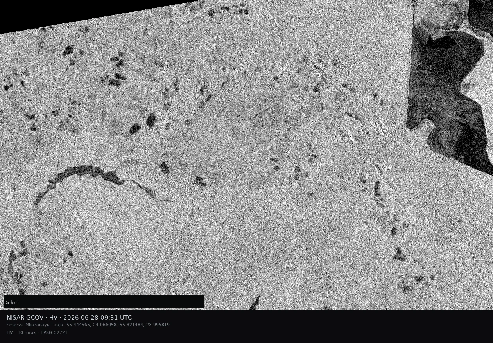
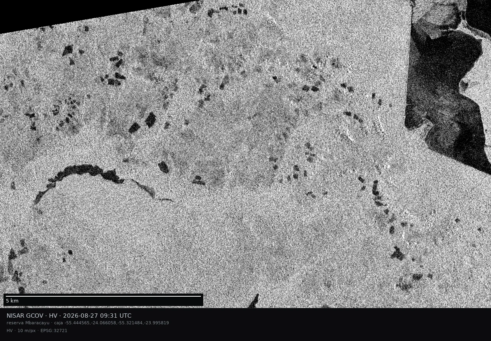
28 jun 202627 ago 2026
Reserva. Misma escala de grises en ambas fechas. El bosque se ve parejo: no hay
frentes de desmonte como los del Chaco.
Reserva contra la región
Reserva
Región
Área de la caja
9.762 ha
76.668 ha
Bosque
8.646 ha (89 %)
62.752 ha (82 %)
Pérdida a 3 dB
218,9 ha
1.069,8 ha
Componentes conexas
6.573
28.461
Superan 0,5 ha
4,4 ha en 7 bloques
291,5 ha en 89 bloques
Bloque mayor
0,9 ha
34,3 ha
Misma escena, misma ventana de 60 días. La diferencia no es el método: es el
terreno.
El detector crudo marca 218,9 ha, pero son píxeles sueltos: el fragmento mediano mide
0,02 ha, ruido de la imagen de radar. Al exigir bloques de media hectárea quedan
4,4 ha en siete manchas, la mayor de 0,9 ha. El control —459 ha dentro
de la misma caja— produce cero bloques. En esta ventana la reserva no muestra desmonte
a escala de parcela, mientras la región que la rodea sí.
La misma reserva en Sentinel-2, antes de que existieran las escenas NISAR
NISAR no tiene imágenes de la reserva antes del 19 de junio de 2026. Ese período se
cubrió con Sentinel-2, restringido al polígono del área protegida: 8.840 ha de
bosque dentro de una caja de 9.719 ha. La pérdida entre julio y octubre de 2025 son
catorce parcelas pequeñas.
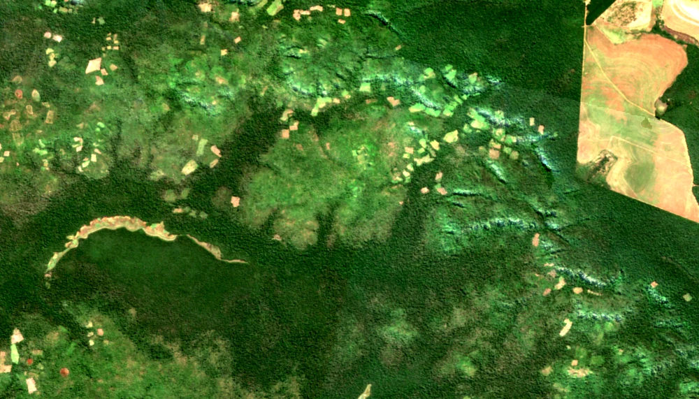
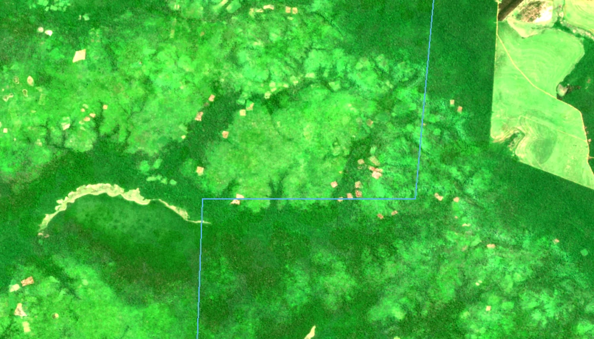
03 jul 202531 oct 2025
Sentinel-2 L2A, color real, mediana de la ventana, nubes enmascaradas. Mismo
rango de contraste en las dos fechas.
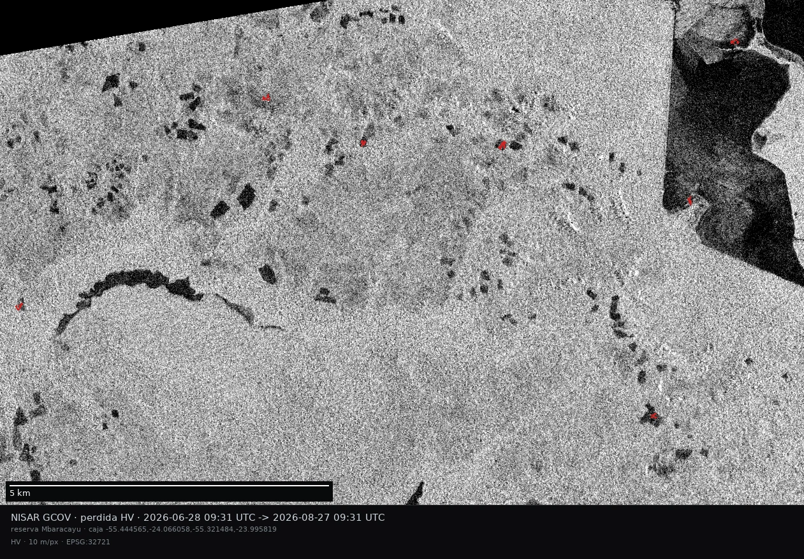
Pérdida de HV con unidad mínima de mapeo de 0,5 ha. De 6.573 fragmentos sobreviven
siete, todos menores a una hectárea.
06
Lo que esta página no prueba
Un resultado honesto declara su alcance. Estas son las limitaciones del método y del
producto, incluidas las que reducen lo que se puede afirmar.
La primera es la que un especialista en radar va a buscar: la retrodispersión
no es solo cobertura. La humedad del suelo, la lluvia y el ángulo de
incidencia mueven el brillo de la escena sin que el terreno cambie. Acá se controla de
tres maneras —ventanas de 12 días, un bosque de control medido con las mismas imágenes
y la diferencia entre HV y HH— y ninguna de las tres convierte al detector en un
inventario forestal.
07
Para qué sirve, y hasta dónde puede llegar
El monitoreo de bosque se apoya en imágenes ópticas, y en el Chaco eso significa
depender del cielo. Un detector de radar con comprobante reproducible no reemplaza ese
monitoreo: lo cubre donde el óptico se queda sin datos, y lo hace con una cifra que se
puede auditar.
Usuarios posibles, ninguno comprometido: el Instituto Forestal Nacional (INFONA), el
Ministerio del Ambiente y Desarrollo Sostenible (MADES), gobernaciones y
municipalidades, organizaciones ambientales, universidades y grupos de investigación,
y cooperativas o productores que necesiten verificar una denuncia con evidencia
propia.
Hoy
Lo que ya funciona
Consola completa con tres familias de producto: GCOV, SME2 y GUNW.
Dos desmontes medidos, con control pareado y verificación Sentinel-2.
45 tests sin red, imagen Docker publicada y plan de comandos por corrida.
Próximo
Lo que falta para confiar más
Validación in situ y matriz de confusión con fechas ópticas pareadas.
Corrección por ángulo de incidencia y filtro speckle multitemporal.
Umbral calibrado por región y flujo automatizado con API y alertas.
Después
Hacia dónde escala
Operación continua sobre áreas prioritarias, con series comparables.
Integración con sistemas nacionales de monitoreo y reporte.
Versión en inglés y publicación de las máscaras para verificación externa.
La misma señal sirve para más de una pregunta
Dos de las extensiones no son una promesa: el producto de agua y el de incendio ya
existen en la consola. Lo que falta es el flujo operativo alrededor.
Inundaciones
El producto de agua de GCOV ya separa superficie inundada, y GUNW aporta coherencia
y fase del par de doce días. Un mapa de anegamiento por evento es la extensión más
directa del mismo pipeline.
Incendios
El producto de incendio cruza la escena con los focos de calor de FIRMS. El radar
aporta lo que el óptico no puede: la cicatriz debajo del humo.
Uso del suelo y humedad
SME2 ya entrega humedad del suelo a 200 m y la consola ya arma series temporales.
Con esas dos piezas se puede seguir pasturas, rotación de cultivos y estrés hídrico.
Esto es una primera versión. Mide dos casos, con un método explícito y sus límites
escritos. Lo que sigue no es una promesa de producto: es la lista de lo que falta para
que el mismo flujo sirva de forma operativa, y con datos de campo puede volverse una
herramienta bastante más completa.